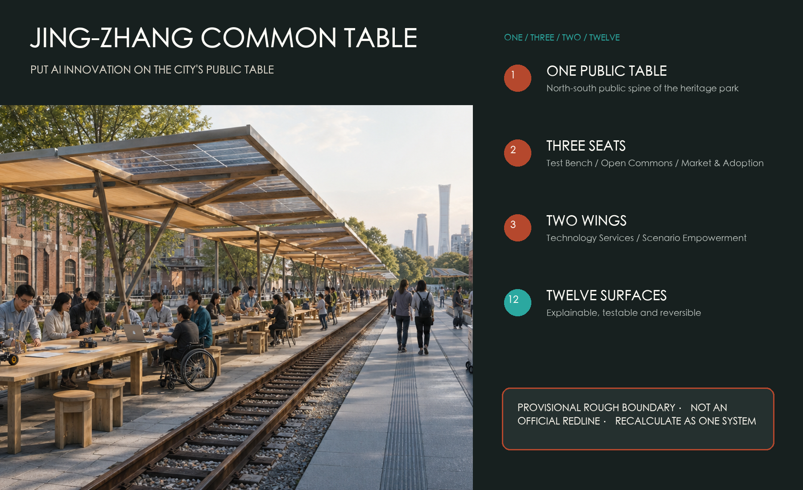
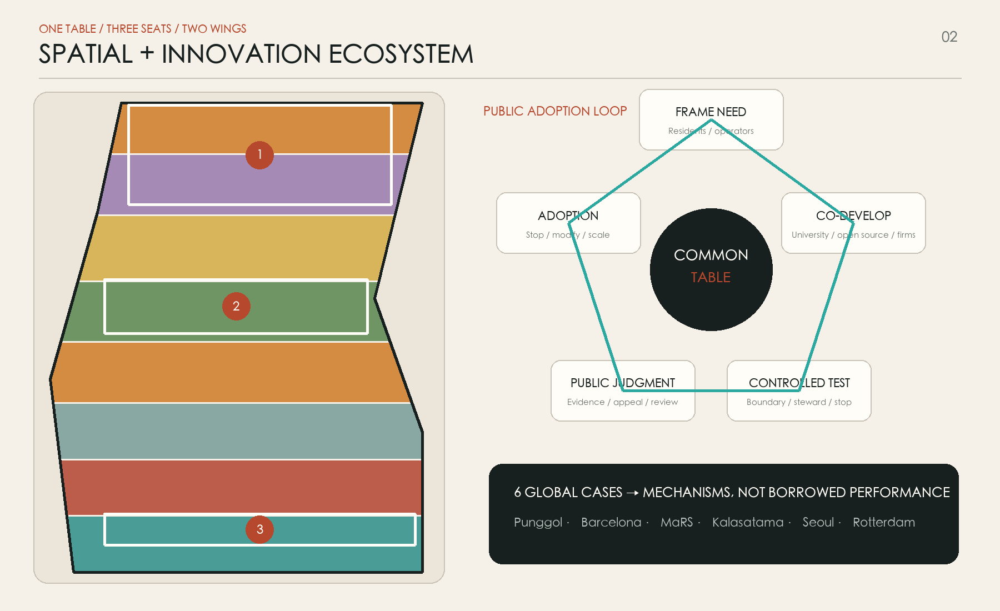
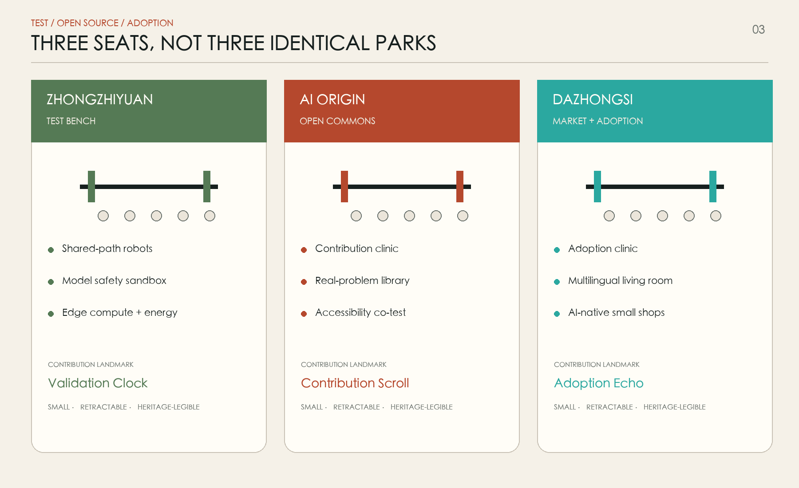
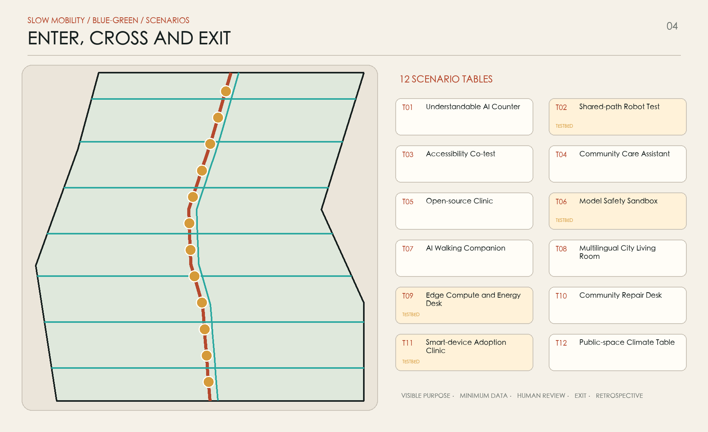
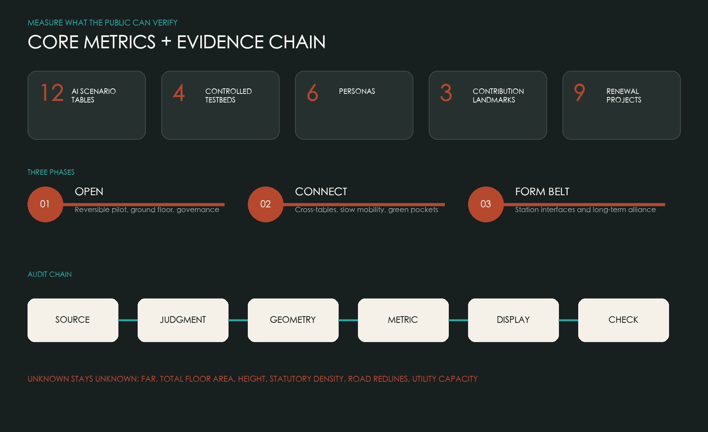

OVERVIEW / MAP
One table · Three seats · Two wings · Twelve surfaces
A continuous public table links the Zhongzhiyuan Test Bench, AI Origin Open Commons and Dazhongsi Market and Adoption Table. Technology service and scenario empowerment wings complete a public adoption loop.
THREE-LEVEL SCOPE / FRAMEWORK



KEY AREAS / THREE SEATS
Evidence, not spectacle
Every scenario has a visible purpose, minimum data, a responsible human, an exit and a retrospective. Unknown controls remain unknown.
LAND USE / COMPLETE PARTITION
MOBILITY / WALK + CYCLE

BLUE-GREEN PUBLIC SPACE / PUBLIC TABLECLOTH
A continuous shaded tablecloth, three rain pockets and twelve places to stop.
BUILDINGS / GROUND-FLOOR INTERFACES
Building geometry tests ground-floor interfaces and capacity; it is neither an existing survey nor a demolition list.
PROJECTS / PHASING
Nine projects: open, connect, form the belt

AI SCENARIOS / TWELVE TABLES
- T01Understandable AI Counter
- T02Shared-path Robot Test · TESTBED
- T03Accessibility Co-test
- T04Community Care Assistant
- T05Open-source Clinic
- T06Model Safety Sandbox · TESTBED
- T07AI Walking Companion
- T08Multilingual City Living Room
- T09Edge Compute + Energy · TESTBED
- T10Community Repair Desk
- T11Smart-device Adoption Clinic · TESTBED
- T12Public-space Climate Table
METRICS / RECALCULABLE EVIDENCE
TASK COVERAGE / 23 REQUIRED ITEMS
17 + 6
Seventeen announcement requirements and six Agent tasks map to text, geometry, metrics, drawings and checks.
SELF-CHECK / FOUR GATES
4 GATES
Deterministic validation, spatial review, visual packaging and professional evidence must all pass.
Primary public sources and rights
Project facts come from the official announcement and repository site package. Six global cases inform mechanisms only. No third-party image, logo, font or page code is copied.
Assumptions and recalculation triggers
Official boundary, regulatory controls, surveys, transport, utilities, heritage and ecology remain pending. This proposal is a concept reference for professional development, not an approved plan.
SOURCES · ASSUMPTIONS
Provisional rough geometry. Not an official redline or approval basis; recalculate every layer when official data arrives.